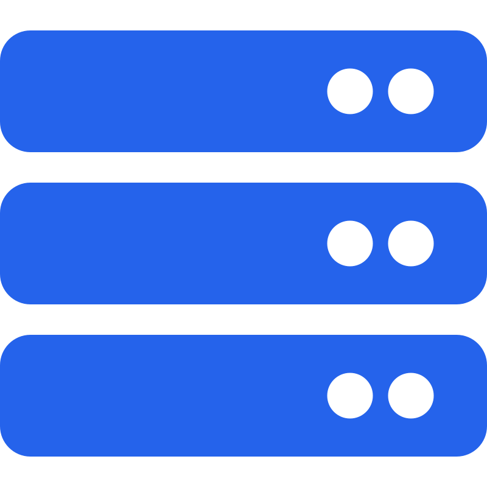

The Problem
I wanted somewhere that was more useful than a digital CV. I needed a place to document projects, explain what I was learning and show the thinking behind the systems I build.
Case Study
A live portfolio project documenting how I built my own website using a custom domain, Cloudflare, GitHub, HTML, CSS and a self-hosted deployment path.
Project Overview
I wanted a professional online presence that could grow with my career, while also giving me a practical project to learn Git, Cloudflare, web design, self-hosting and deployment.

Self-hostedI wanted somewhere that was more useful than a digital CV. I needed a place to document projects, explain what I was learning and show the thinking behind the systems I build.
The site is designed to sit behind Cloudflare and route through my home lab using Nginx Proxy Manager before reaching a Docker-hosted website container.

The first version was built with plain HTML and CSS so I could understand the structure before adding more complex tooling later.
I created the GitHub repository, built the folder structure, added responsive styling, refactored the CSS into a cleaner design system and began documenting each stage.
One early issue was the CSS not loading correctly because the repository structure had become nested. I used browser developer tools to identify the missing file path, fixed the structure and committed the correction properly.
Repository
The GitHub repository shows the site being built step by step, including layout changes, CSS refactoring and project documentation.
View GitHub Repository